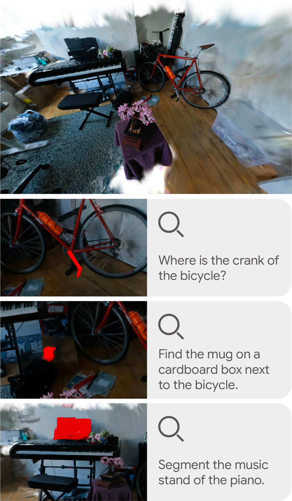
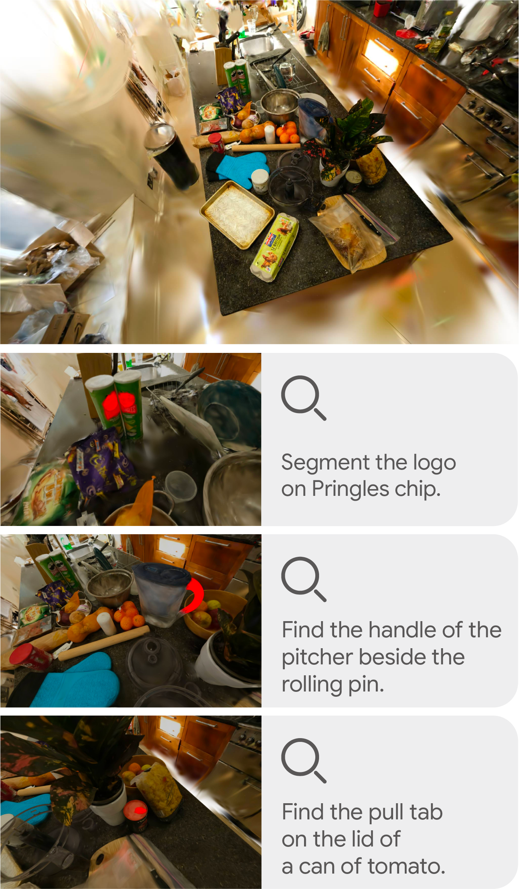
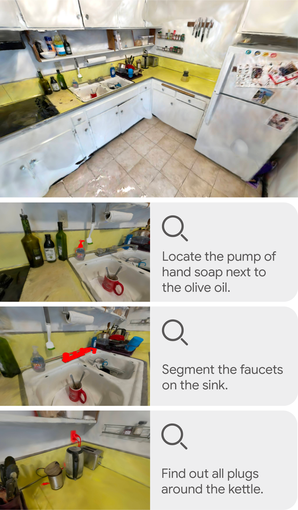
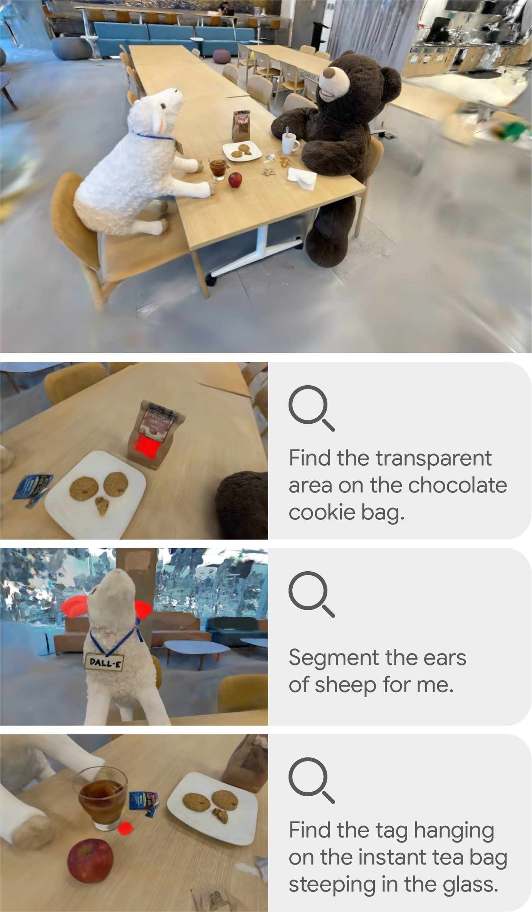
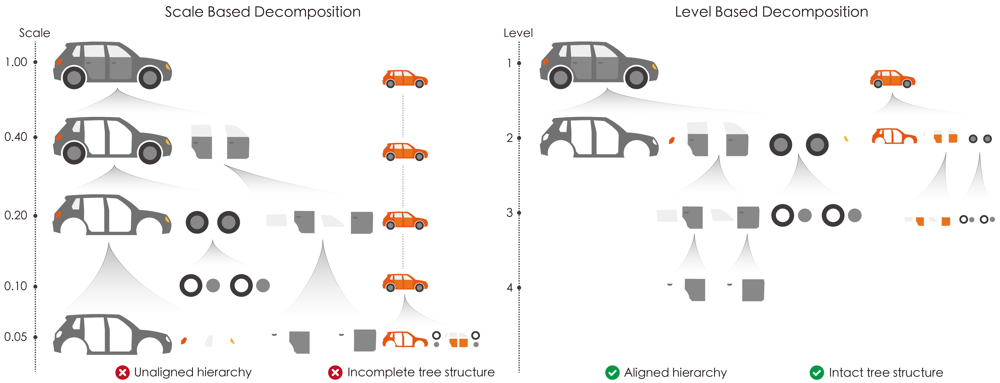
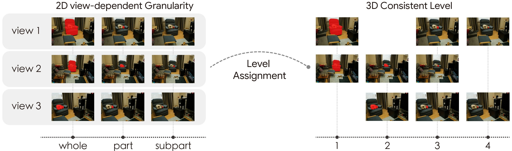
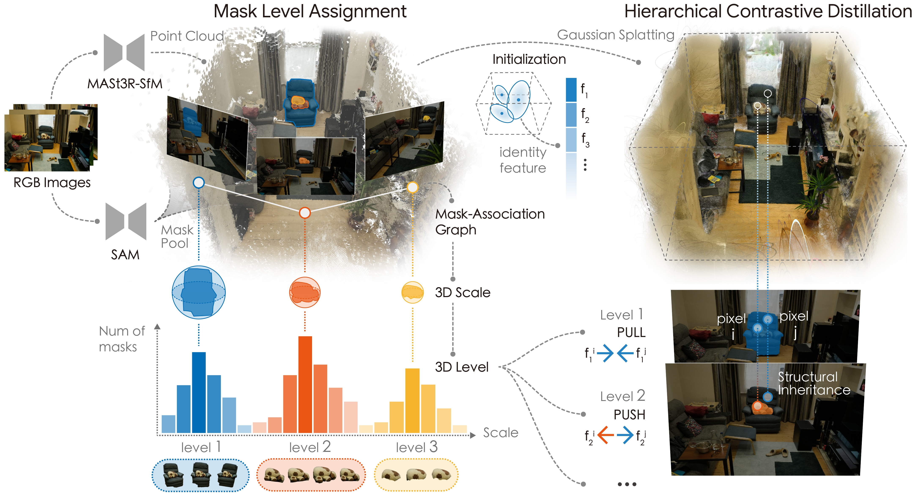
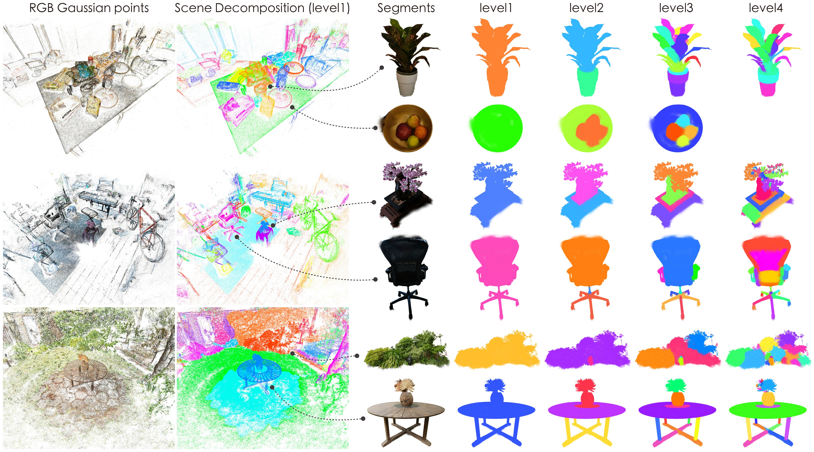

bonsai

counter

garden

kitchen

teatime





We introduce LEGO for advanced open-vocabulary scene understanding. Beyond basic concept recognition, its core innovation lies in capturing the intrinsic semantic hierarchies within the scene.
While foundation models like SAM can identify multi-granular structures in 2D, their partitions are strictly perspective-bound and lack cross-view consensus. LEGO self-adaptively re-grades volatile multi-view SAM granularities into a unified, 3D-consistent hierarchy. This provides precise supervision for the structurally coherent, multi-level segmentation of 3D scenes. By grounding these segments with CLIP embeddings, LEGO recovers open-vocabulary semantic logic across hierarchical levels.
Furthermore, by incorporating spatial relationships, we elevate these segments into level-wise language scene graphs, effectively empowering Large Language Models to perform complex, context-aware spatial reasoning and precise visual grounding. Experimental results demonstrate that LEGO establishes new state-of-the-art performance across both promptable and open-vocabulary 3D segmentation benchmarks, exhibiting advanced hierarchical scene decomposition and context-aware spatial reasoning.

Relying on absolute physical scales leads to "semantic-scale decoupling" because objects of the same class often vary in size. At a fixed scale, a large car might be segmented into multiple parts, while a smaller car remains entirely intact. This creates an unaligned and incomplete hierarchy that requires exhaustive manual tuning.
To build an accurate 3D semantic tree, LEGO shifts from manual physical scales to intrinsic structural levels. A structural level is a consistent compositional rank invariant to absolute size. As shown on the right, LEGO ensures both large and small cars are parsed into identical semantic tiers simultaneously, guaranteeing an aligned and intact hierarchy for automated reasoning.

LEGO discovers the complete 3D hierarchical structure implicit in multi-view 2D masks by clustering them based on spatial co-visibility and 3D scale, assigning each mask to its corresponding view-consistent level. This level-based paradigm provides natively consistent supervision, effortlessly parsing the scene into stable semantic tiers.

LEGO first lifts multiview SAM masks into a 3D coherent scale space to assign them view-consistent structural levels. Guided by these level-masks, a hierarchical contrastive distillation process optimizes the decoupled identity features of the Gaussian field, effectively parsing the scene into stable structural tiers.
Building upon this robust 3D hierarchy, LEGO bridges the gap between 3D structures and natural language. By grounding these hierarchical segments with CLIP embeddings, our method seamlessly recovers open-vocabulary semantic logic across all structural levels. Furthermore, by incorporating spatial relationships, we elevate these discrete segments into level-wise language scene graphs. This structured representation effectively empowers Large Language Model (LLM) agents to perform complex, context-aware spatial reasoning and precise 3D visual grounding.

After feature learning, LEGO performs hierarchical segmentation through a top-down recursive clustering strategy, naturally representing the scene as a tree-structured leveled hierarchy.
By attaching these hierarchical segments with CLIP embeddings, LEGO seamlessly enables precise 3D visual grounding at any granularity.
This research was inspired by several outstanding works.
GARField and SAGA explored hierarchical decomposition in radiance fields, providing inspiration and a starting point for this work. We thank these outstanding contributions from the community.
gsplat developed accessible 3D Gaussian rendering frameworks, significantly simplifying the representation and rendering of 3D language features in scenes.